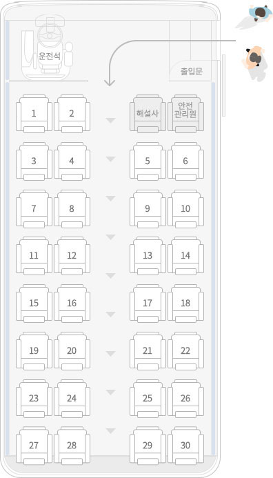

대표전화 061)379-3504/3505, 우(58112) 전라남도 화순군 화순읍 동헌길 23 화순군청 관광진흥과
대표메일 : isiore@korea.kr 사업자등록번호: 408-83-00944 대표자 : 구복규
COPYRIGHT ⓒ HWASUN-GUN. ALL RIGHTS RESERVED
사진자료 무단 사용 시 법적처벌을 받을 수
있습니다.

깊은역사와 수려한 자연경관, 감동이 있는 화순여행!
운영기간
2023. 3. 20. ~ 11. 30.이용요금
10,000원/1인출발시간
1일 총 2회이용가능인원
1일 120인운행시간
3시간 소요
출발 화순읍
(이용대체육관 앞)
1전망대
(거북섬)
2전망대
(보산, 노루목적벽)
화순적벽
(망향정, 망미정)
종료 화순읍
(이용대체육관 앞)

!테이블을 양옆으로 스크롤해주세요
| 시 간 [오전, 오후] |
소요(분) | 세 부 일 정 | 비 고 |
|---|---|---|---|
| 오전09:30∼10:10 오후14:00∼14:40 |
40분 | 이동(이용대체육관 → 적벽입구 초소) | 탑승 |
| 오전10:10∼10:15 오후14:40∼14:45 |
5분 | 이동(적벽입구 →1전망대) | |
| 오전10:15∼10:20 오후14:45∼14:50 |
5분 | 사진촬영(거북섬) | 정차 |
| 오전10:20∼10:30 오후14:50∼15:00 |
10분 | 이동(1포토존→2전망대) | |
| 오전10:30∼10:35 오후15:00∼15:05 |
5분 | 사진촬영(보산적벽, 노루목적벽) | 정차 |
| 오전10:35∼10:40 오후15:05∼15:10 |
5분 | 이동(2전망대→망향정) | |
| 오전10:40∼11:40 오후15:10∼16:10 |
60분 | 망향정, 망미정(보산적벽, 노루목적벽) | 하차 |
| 오전11:40∼12:00 오후16:10∼16:30 |
20분 | 이동(망향정 → 적벽초소) | |
| 오전12:00∼12:30 오후16:30∼17:00 |
30분 | 이동(적벽초소 → 이용대체육관) | 해산 |
대표전화 061)379-3504/3505, 우(58112) 전라남도 화순군 화순읍 동헌길 23 화순군청 관광진흥과
대표메일 : isiore@korea.kr 사업자등록번호: 408-83-00944 대표자 : 구복규
COPYRIGHT ⓒ HWASUN-GUN. ALL RIGHTS RESERVED
사진자료 무단 사용 시 법적처벌을 받을 수
있습니다.